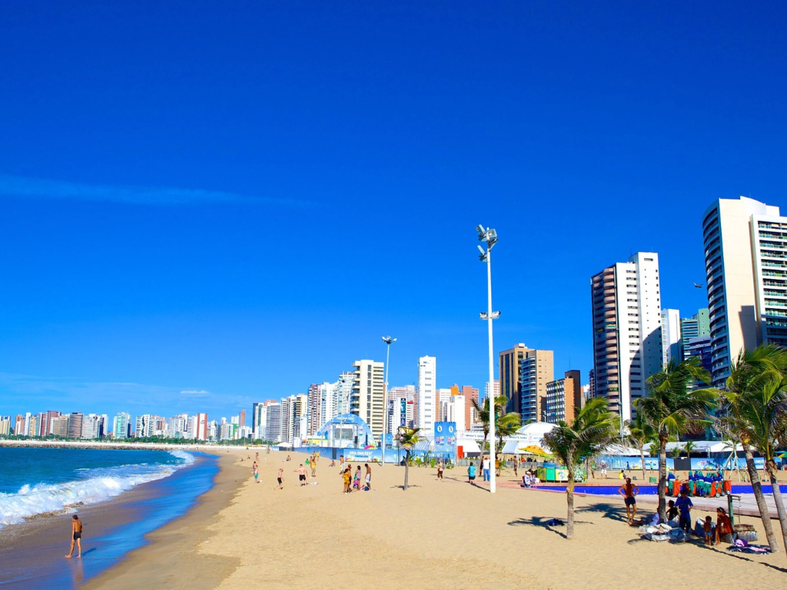

O Ceará localiza-se no norte da Região Nordeste e tem Fortaleza como capital, destacando-se como um polo econômico e turístico regional. O estado faz fronteira com o Piauí, Pernambuco, Paraíba e Rio Grande do Norte, sendo banhado ao norte pelo Oceano Atlântico. Sua economia é impulsionada pelo comércio, pelo complexo industrial-portuário do Pecém, pela produção de calçados e pelo agronegócio de frutas tropicais. No turismo, atrai visitantes do mundo inteiro com destinos litorâneos famosos como Jericoacoara e Canoa Quebrada.

Voltar